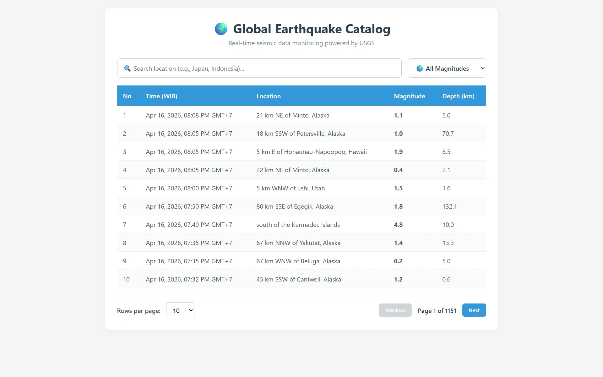
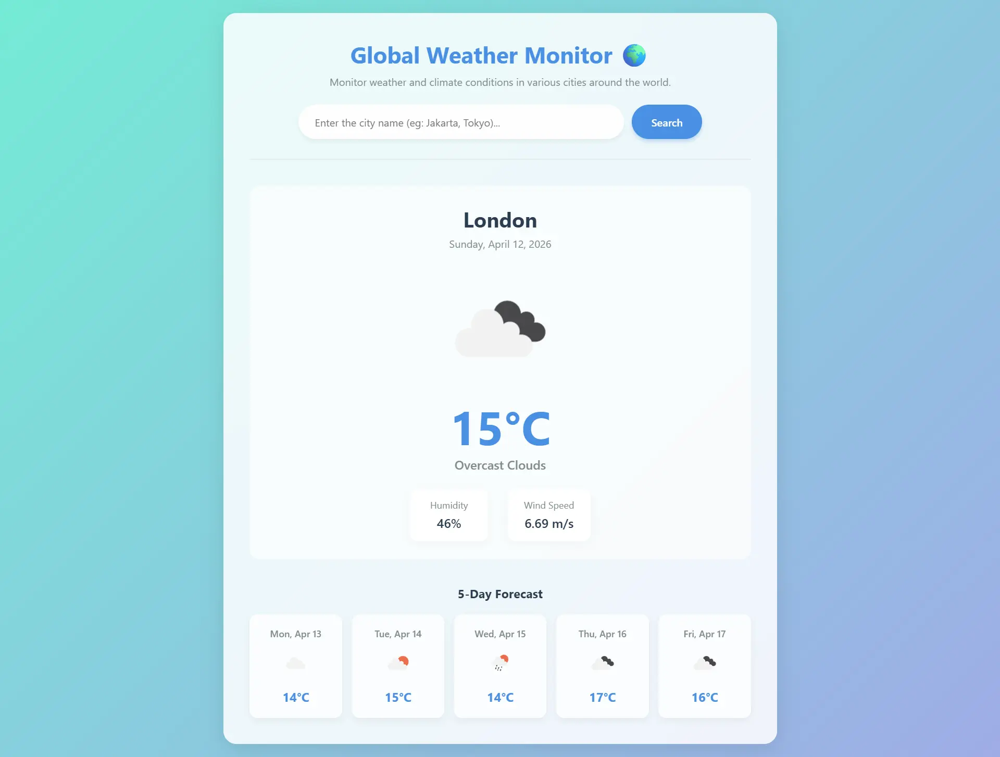
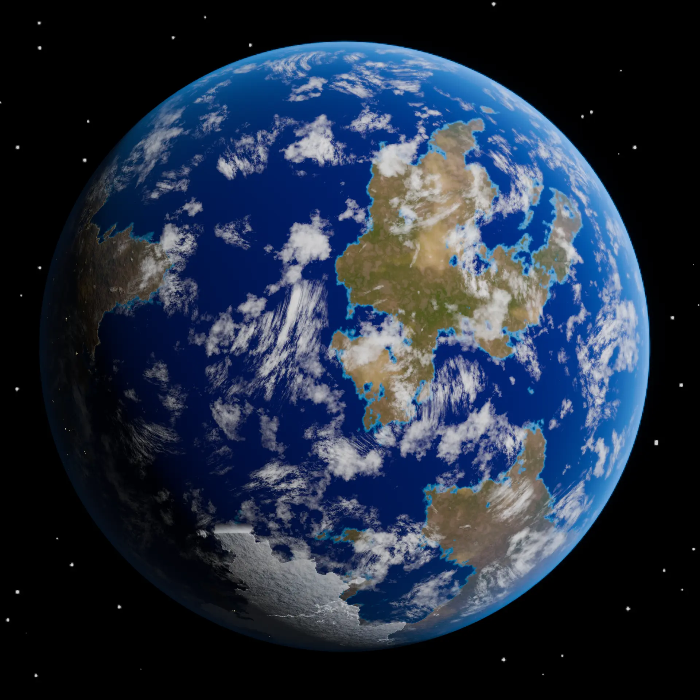

Global Earthquake Catalog Pro
Real-time Web-GIS dashboard managing 10,000+ seismic records with zero lag.
Live DemoA digital laboratory bridging the gap between earth sciences and interactive web technologies through Pop-Sci journalism and 3D visualization.
Explore Our WorkGeoscientist & Tech Developer specializing in Web-GIS, Seismic Data Visualization, and Remote Sensing. Focused on making complex geoscience concepts accessible through interactive digital platforms.
Currently seeking technical opportunities as a GIS Specialist or Surveyor, while actively preparing for advanced graduate studies (MEXT & LPDP 2026).

Real-time Web-GIS dashboard managing 10,000+ seismic records with zero lag.
Live Demo
Global weather monitoring using openweathermap.org free API key.
Read More
Interactive educational low-poly 3D animation built with Blender.
Watch VideoRuang ini sedang dipersiapkan untuk memuat analisis mendalam dan interpretasi geofisika di balik arsitektur pemrosesan data Global Earthquake Catalog dan observasi cuaca spasial. Berdedikasi untuk membedah sains di balik layar secara komprehensif.